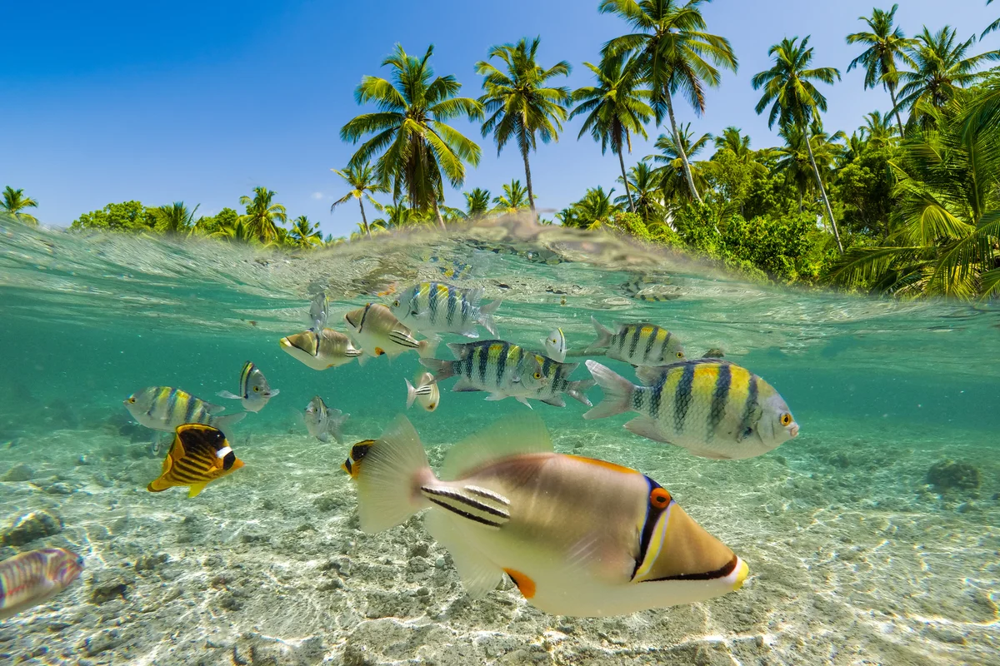

Where the Ocean Meets Your Soul
The World’s Most Breathtaking Beaches
From powder-soft white sands to dramatic coastlines kissed by turquoise waves, these beaches are more than destinations — they’re feelings.
- Date:
- Reading time:
- 6 min.
- Read:
- 164
- Shared:
- 18
TOP 5 beach destinations for 2026
Some beaches you visit. Others stay with you long after the sand's washed off your feet. This list is about the second kind — the coastlines that stop you mid-step, where the water shifts through a dozen shades of blue and the horizon feels like it's holding its breath. I've walked a lot of shorelines chasing that feeling, and these are the ones worth planning a whole trip around. Not just pretty places, but the ones that rearrange something in you.
Before you pack the sunscreen, a few things separate a good beach day from a perfect one:
- Go for the light, not the crowd. The best hours are the first and the last — soft sun, empty sand, and colours the midday glare washes out.
- Pack less, notice more. A towel, water, and a good pair of eyes beat a bag full of gear. The point is to be there, not to be busy.
- Respect the water and the locals. Check the tides, read the flags, and treat every shore like someone's home — because it usually is.
- Stay for the change of light. Most people leave before the best part. Sit tight through sunset and you'll see why these places earn their reputation.
- Book accommodation a little inland rather than beachfront. You'll pay a fraction of the price and the walk to the water is part of the charm. Compare stays here.
- Chase the shoulder season. Just before or after peak months you get the same water and warmth with half the crowds and lower prices — the sweet spot most travellers miss.